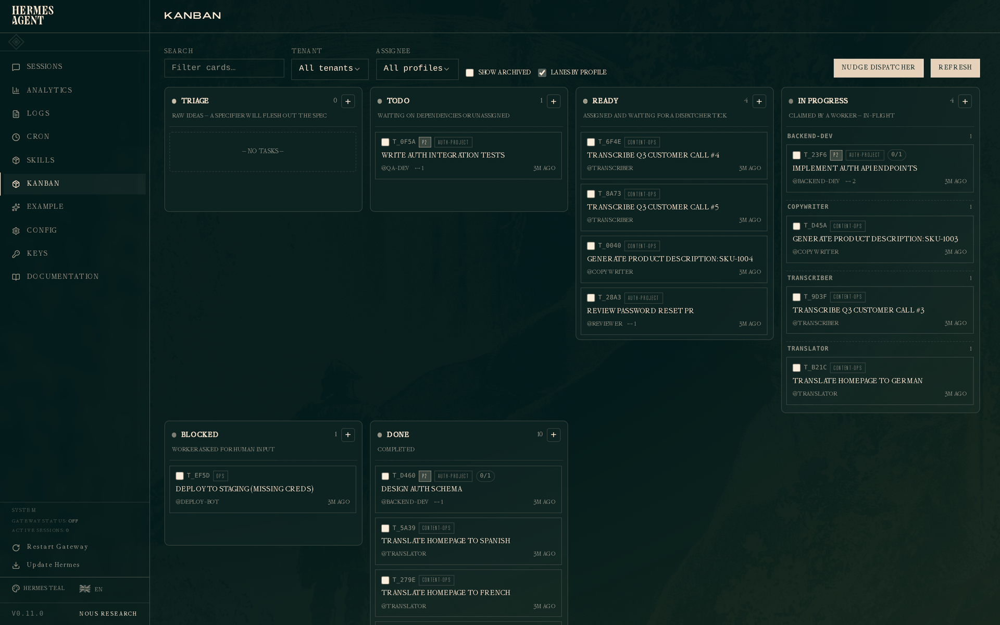
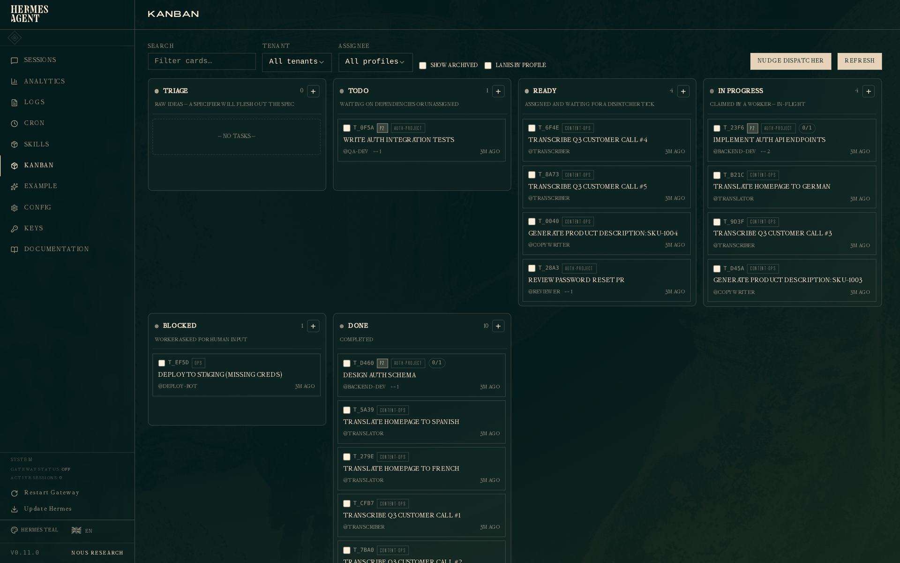
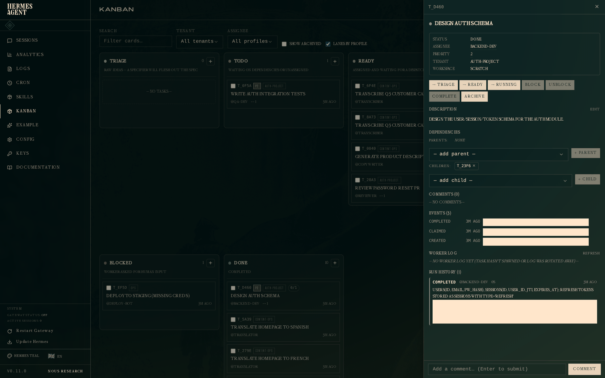
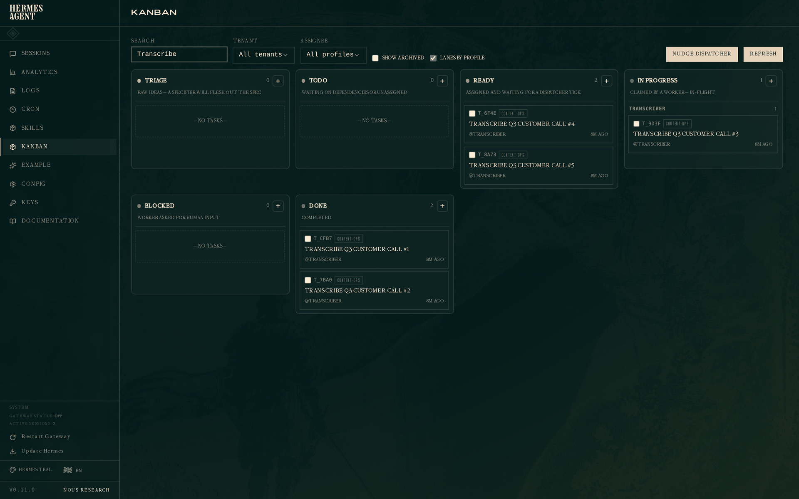
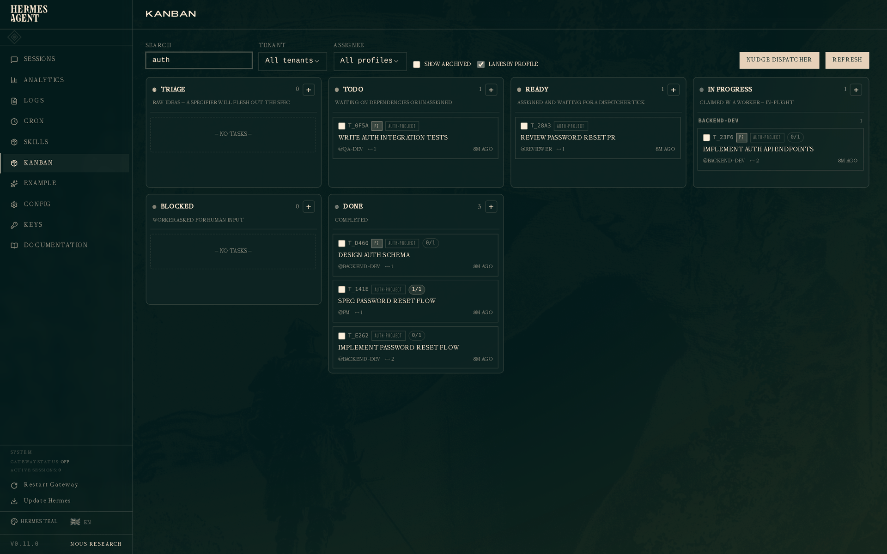
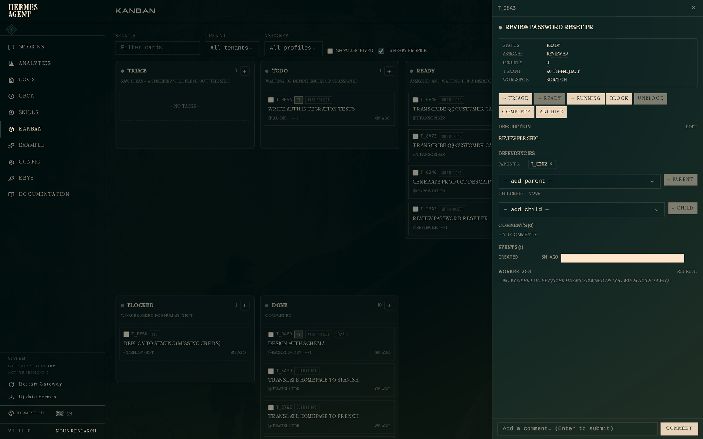
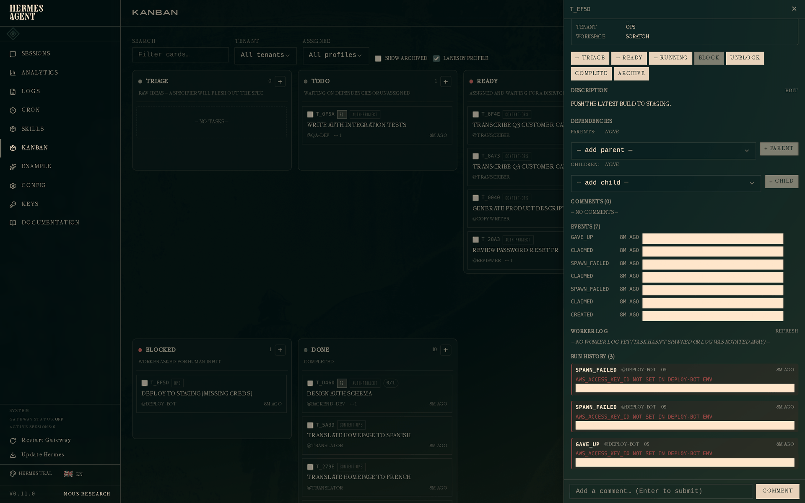
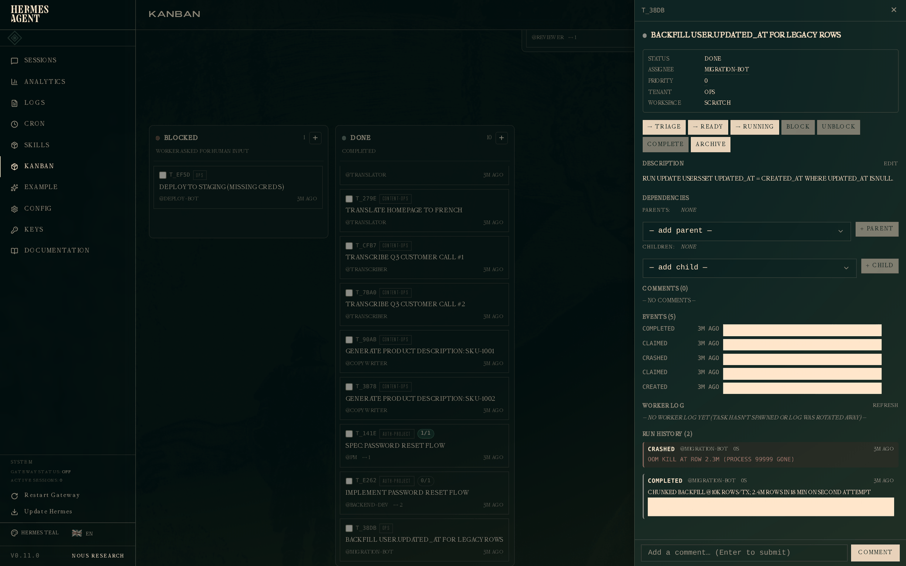
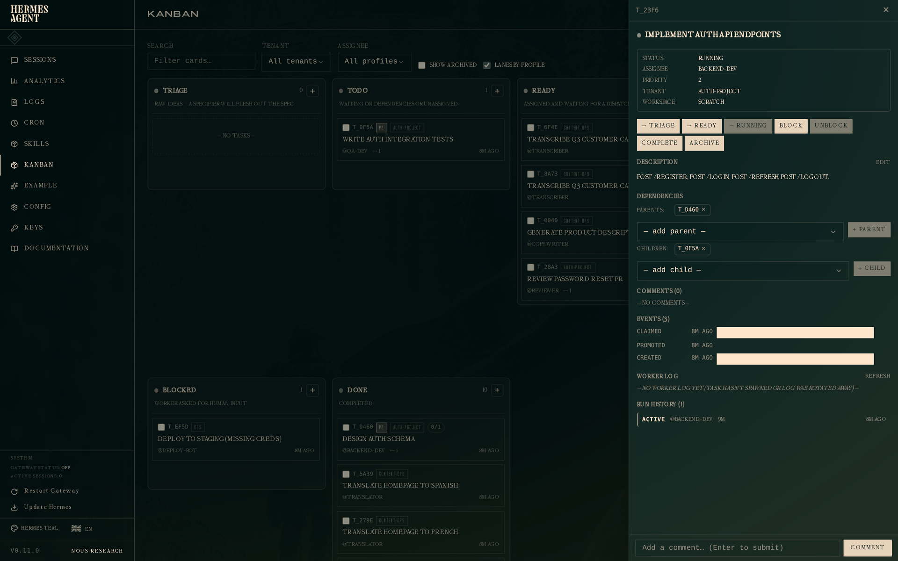

Kanban 教程
Hermes Kanban 系统所设计的四个使用场景的完整演示，需在浏览器中打开 dashboard。如果你还没有阅读 Kanban 概述，请先从那里开始——本文假设你已了解 task（任务）、run（运行）、assignee（负责人）和 dispatcher（调度器）的概念。
准备工作
hermes kanban init # 可选；首次执行 `hermes kanban <任何命令>` 会自动初始化
hermes dashboard # 在浏览器中打开 http://127.0.0.1:9119
# 点击左侧导航栏中的 Kanban
dashboard 是你观察系统最便捷的地方。dispatcher 生成的 agent worker 不会看到 dashboard 或 CLI——它们通过专用的 kanban_* 工具集（kanban_show、kanban_list、kanban_complete、kanban_block、kanban_heartbeat、kanban_comment、kanban_create、kanban_link、kanban_unblock）来操作看板。三个界面——dashboard、CLI、worker 工具——都通过同一个每看板独立的 SQLite 数据库（默认看板为 ~/.hermes/kanban.db，后续创建的任意看板为 ~/.hermes/kanban/boards/<slug>/kanban.db）进行路由，因此无论变更来自哪一侧，每个看板的数据始终一致。
本教程全程使用 default 看板。如果你需要多个隔离队列（每个项目/仓库/领域一个），请参阅概述中的看板（多项目）——相同的 CLI/dashboard/worker 流程适用于每个看板，且 worker 在物理上无法看到其他看板上的任务。
在本教程中，标注为 bash 的代码块是你运行的命令。 标注为 # worker tool calls 的代码块是生成的 worker 模型发出的工具调用——展示在这里是为了让你能端到端地了解整个循环，而不是让你自己去运行它们。
看板概览

从左到右共六列：
- Triage（分类） — 原始想法。默认情况下，dispatcher 会对此处的任务自动运行分解器（orchestrator 驱动的扇出）：它读取你的 profile 名册和描述，生成一张子任务图，将任务路由给最合适的专家，同时保持原始任务作为父任务存活，以便在所有子任务完成后 orchestrator 重新唤醒来判断完成情况。点击 kanban 页面顶部的 Orchestration: Auto/Manual 切换按钮来切换模式。在 Manual 模式下（或没有 orchestrator profile 的配置中），点击卡片上的 ⚗ Decompose，或运行
hermes kanban decompose <id>//kanban decompose <id>。对于不需要扇出的单个任务，✨ Specify 会进行一次性规格重写（目标、方法、验收标准）并将任务提升到todo。在config.yaml的auxiliary.kanban_decomposer和auxiliary.triage_specifier下配置相关模型。参见主 Kanban 指南中的自动与手动编排。 - Todo（待办） — 已创建但等待依赖项，或尚未分配。
- Ready（就绪） — 已分配，等待 dispatcher 认领。
- In progress（进行中） — worker 正在主动执行任务。开启"Lanes by profile"（默认开启）时，此列按负责人分组，让你一眼看出每个 worker 正在做什么。
- Blocked（阻塞） — worker 请求人工输入，或熔断器触发。
- Done（完成） — 已完成。
顶部栏提供搜索、租户和负责人的筛选器，以及 Lanes by profile 切换按钮和 Nudge dispatcher 按钮——后者会立即执行一次调度 tick，而无需等待守护进程的下一个间隔。点击任意卡片会在右侧打开其详情抽屉。
平铺视图
如果 profile 泳道显示过于嘈杂，关闭"Lanes by profile"，In Progress 列会折叠为按认领时间排序的单一平铺列表：

场景一 — 独立开发者交付功能
你正在开发一个功能。经典流程：设计 schema、实现 API、编写测试。三个任务，具有父→子依赖关系。
SCHEMA=$(hermes kanban create "Design auth schema" \
--assignee backend-dev --tenant auth-project --priority 2 \
--body "Design the user/session/token schema for the auth module." \
--json | jq -r .id)
API=$(hermes kanban create "Implement auth API endpoints" \
--assignee backend-dev --tenant auth-project --priority 2 \
--parent $SCHEMA \
--body "POST /register, POST /login, POST /refresh, POST /logout." \
--json | jq -r .id)
hermes kanban create "Write auth integration tests" \
--assignee qa-dev --tenant auth-project --priority 2 \
--parent $API \
--body "Cover happy path, wrong password, expired token, concurrent refresh."
由于 API 以 SCHEMA 为父任务，tests 以 API 为父任务，只有 SCHEMA 从 ready 状态开始。其他两个任务在 todo 中等待，直到其父任务完成。这正是依赖提升引擎在发挥作用——在有 API 可测试之前，不会有其他 worker 去接手测试编写工作。
在下一次 dispatcher tick 时（默认 60 秒，或点击 Nudge dispatcher 立即触发），backend-dev profile 会以 HERMES_KANBAN_TASK=$SCHEMA 作为环境变量生成一个 worker。以下是该 worker 在 agent 内部的工具调用循环：
# worker tool calls — NOT commands you run
kanban_show()
# → 返回 title、body、worker_context、parents、prior attempts、comments
# （worker 读取 worker_context，使用终端/文件工具设计 schema，
# 编写迁移脚本，运行自身检查，提交——真正的工作在这里发生）
kanban_heartbeat(note="schema drafted, writing migrations now")
kanban_complete(
summary="users(id, email, pw_hash), sessions(id, user_id, jti, expires_at); "
"refresh tokens stored as sessions with type='refresh'",
metadata={
"changed_files": ["migrations/001_users.sql", "migrations/002_sessions.sql"],
"decisions": ["bcrypt for hashing", "JWT for session tokens",
"7-day refresh, 15-min access"],
},
)
kanban_show 默认将 task_id 设为 $HERMES_KANBAN_TASK，因此 worker 无需知道自己的 id。kanban_complete 将 summary 和 metadata 写入当前 task_runs 行，关闭该 run，并将任务转换为 done——全部通过 kanban_db 以原子方式完成。
当 SCHEMA 进入 done 状态时，依赖引擎会自动将 API 提升为 ready。API worker 认领任务后，调用 kanban_show() 时会看到 SCHEMA 的 summary 和 metadata 附加在父任务交接信息中——因此它无需重新阅读冗长的设计文档就能了解 schema 的决策。
在看板上点击已完成的 schema 任务，抽屉会显示所有信息：

底部的 Run History 部分是关键新增内容。一次尝试：结果 completed，worker @backend-dev，耗时、时间戳，以及完整的交接 summary。metadata 块（changed_files、decisions）也存储在 run 上，并会呈现给读取该父任务的任何下游 worker。
你可以随时在终端检查相同的数据——以下命令是你查看看板，而非 worker 执行：
hermes kanban show $SCHEMA
hermes kanban runs $SCHEMA
# # OUTCOME PROFILE ELAPSED STARTED
# 1 completed backend-dev 0s 2026-04-27 19:34
# → users(id, email, pw_hash), sessions(id, user_id, jti, expires_at); refresh tokens ...
场景二 — 集群并行处理
你有三个 worker（翻译员、转录员、文案撰写员）和一批相互独立的任务。你希望三者并行拉取任务并产生可见进展。这是最简单的 kanban 使用场景，也是最初设计所优化的场景。
创建工作任务：
for lang in Spanish French German; do
hermes kanban create "Translate homepage to $lang" \
--assignee translator --tenant content-ops
done
for i in 1 2 3 4 5; do
hermes kanban create "Transcribe Q3 customer call #$i" \
--assignee transcriber --tenant content-ops
done
for sku in 1001 1002 1003 1004; do
hermes kanban create "Generate product description: SKU-$sku" \
--assignee copywriter --tenant content-ops
done
启动 gateway 然后离开——它托管内嵌的 dispatcher， 在同一个 kanban.db 上处理三个专家 profile 的任务：
hermes gateway start
现在将看板筛选到 content-ops（或直接搜索"Transcribe"），你会看到：

两个转录任务已完成，一个正在运行，两个就绪等待下一次 dispatcher tick。In Progress 列按 profile 分组（"Lanes by profile"默认开启），让你无需扫描混合列表即可看到每个 worker 的当前任务。dispatcher 会在当前任务完成后立即将下一个就绪任务提升为运行中。三个守护进程并行处理三个负责人池，整个内容队列无需进一步人工干预即可清空。
场景一中关于结构化交接的所有内容在这里同样适用。 完成一次通话的翻译 worker 会发出 kanban_complete(summary="translated 4 pages, style matched existing marketing voice", metadata={"duration_seconds": 720, "tokens_used": 2100})——对分析以及依赖此任务的任何下游任务都很有价值。
场景三 — 角色流水线与重试
这正是 Kanban 相比普通 TODO 列表的价值所在。PM 编写规格说明，工程师实现，审查者拒绝第一次尝试，工程师修改后再次尝试，审查者批准。
dashboard 视图，按 auth-project 筛选：

此截图使用预创建下游审查卡模型：实现卡有一个专用 reviewer 子卡。在该模型中，实现完成后工程师必须调用 kanban_complete，这样 reviewer 子卡才能离开 todo。不要为了请求审查而阻塞实现父卡。
如果同一张卡同时承载实现和审查，请改用一等 review lifecycle。完整的实现 → 审查 → 修改 → 再审流程如下：
# --- 工程师：第一次实现 ---
kanban_show()
# （编写代码、运行测试、准备候选版本）
kanban_request_review(
summary="implemented reset flow; candidate is ready for review",
metadata={"changed_files": ["auth/reset.py"], "tests_run": 8},
reviewer="reviewer",
)
# → 同一张卡进入 review；实现 run 以 outcome='review_requested' 关闭
# --- Reviewer：请求修改 ---
kanban_show()
# （检查 handoff 和候选版本）
kanban_request_changes(
reason="Add password-strength validation and make reset tokens single-use."
)
# → review run 以 outcome='changes_requested' 关闭；卡片返回 backend-dev
# 的 ready/todo，且不会触碰 block-loop 计数
# --- 工程师：第二次实现 ---
kanban_show() # worker_context 中包含之前的审查证据
# （应用反馈并重新运行测试）
kanban_request_review(
summary="added zxcvbn validation and single-use reset tokens",
metadata={
"changed_files": [
"auth/reset.py",
"auth/tests/test_reset.py",
"migrations/003_single_use_reset_tokens.sql",
],
"tests_run": 11,
"review_iteration": 2,
},
reviewer="reviewer",
)
# --- Reviewer：批准 ---
kanban_complete(summary="review passed; acceptance criteria verified")
# → done
任务的 run 历史现在记录 review_requested → changes_requested → review_requested → completed。每次尝试都有独立的 actor、summary、metadata 和 outcome，因此第二次工程师运行能准确看到被拒绝的原因，最终批准也可审计。kanban_block 只用于真正的外部升级（缺少访问权限、产品决策、基础设施不可用），而不是普通审查反馈。
如果你有意使用截图中的下游卡模型，reviewer 会在实现父卡完成后打开 Review password reset PR：

reviewer 卡的 worker_context 包含已完成实现的 handoff。这是独立卡工作流；不要再与同卡 kanban_request_review 混用，否则会重复创建审查通道。
场景四 — 熔断器与崩溃恢复
真实的 worker 会失败。缺少凭证、OOM 终止、瞬时网络错误。dispatcher 有两道防线：熔断器（circuit breaker）在连续 N 次失败后自动阻塞任务，防止看板无限抖动；崩溃检测（crash detection）在 worker PID 于 TTL 到期前消失时回收任务。
熔断器 — 持续性失败
一个因 profile 环境中未设置 AWS_ACCESS_KEY_ID 而无法生成 worker 的部署任务：
hermes kanban create "Deploy to staging (missing creds)" \
--assignee deploy-bot --tenant ops \
--max-retries 3
dispatcher 尝试生成 worker。生成失败（RuntimeError: AWS_ACCESS_KEY_ID not set）。dispatcher 释放认领，递增失败计数器，并在下一次 tick 重试。由于本示例设置了 --max-retries 3，在三次连续失败后熔断器触发：任务进入 blocked 状态，outcome 为 gave_up。如果省略该标志，Hermes 使用 kanban.failure_limit（默认值：2）。在人工解除阻塞之前不再重试。
点击被阻塞的任务：

三个 run，error 字段均为相同错误。前两个为 spawn_failed（可重试），第三个为 gave_up（终止）。上方的事件日志显示完整序列：created → claimed → spawn_failed → claimed → spawn_failed → claimed → gave_up。
在终端：
hermes kanban runs t_ef5d
# # OUTCOME PROFILE ELAPSED STARTED
# 1 spawn_failed deploy-bot 0s 2026-04-27 19:34
# ! AWS_ACCESS_KEY_ID not set in deploy-bot env
# 2 spawn_failed deploy-bot 0s 2026-04-27 19:34
# ! AWS_ACCESS_KEY_ID not set in deploy-bot env
# 3 gave_up deploy-bot 0s 2026-04-27 19:34
# ! AWS_ACCESS_KEY_ID not set in deploy-bot env
如果接入了 Telegram/Discord/Slack，gateway 会在 gave_up 事件时发送通知，让你无需主动检查看板就能得知故障。
崩溃恢复 — worker 在运行中途死亡
有时生成成功，但 worker 进程在之后死亡——段错误、OOM、systemctl stop。dispatcher 轮询 kill(pid, 0) 检测到死亡的 pid；认领释放，任务回到 ready，下一次 tick 将其分配给新的 worker。
种子数据中的示例是一个因内存不足而运行失败的迁移任务：
# Worker 认领，开始扫描 240 万行，在约 230 万行时被 OOM 终止
# Dispatcher 检测到死亡的 pid，释放认领，递增尝试计数器
# 使用分块策略重试成功
抽屉显示完整的两次尝试历史：

Run 1 — crashed，错误为 OOM kill at row 2.3M (process 99999 gone)。Run 2 — completed，metadata 中包含 "strategy": "chunked with LIMIT + WHERE id > last_id"。重试的 worker 在其上下文中看到了 run 1 的崩溃信息，并选择了更安全的策略；metadata 让未来的观察者（或事后分析撰写者）能清楚地看到发生了什么变化。
结构化交接 — summary 和 metadata 的重要性
在上述每个场景中，worker 在结束时都调用了 kanban_complete(summary=..., metadata=...)。这不是装饰性的——它是工作流各阶段之间的主要交接通道。
当任务 B 上的 worker 被生成并调用 kanban_show() 时，返回的 worker_context 包含：
- B 的先前尝试（之前的 run：outcome、summary、error、metadata），让重试的 worker 不会重蹈失败的路径。
- 父任务结果 — 对于每个父任务，最近一次已完成 run 的 summary 和 metadata——让下游 worker 能看到上游工作的原因和方式。
这取代了平面 kanban 系统中"翻查评论和工作输出"的繁琐流程。PM 在规格说明的 metadata 中编写验收标准，工程师的 worker 在父任务交接中以结构化形式看到它们。工程师记录运行了哪些测试以及通过了多少，审查者的 worker 在打开 diff 之前就已掌握该列表。
批量关闭保护的存在正是因为这些数据是按 run 存储的。hermes kanban complete a b c --summary X（你，从 CLI 执行）会被拒绝——将相同的 summary 复制粘贴到三个任务几乎总是错误的。不带交接标志的批量关闭仍然适用于常见的"我完成了一堆行政任务"场景。工具界面根本不提供批量变体；kanban_complete 始终是单任务操作，原因相同。
已完成卡片的后续工作 — 通过父任务链接进行 CI 修复
场景一的实现卡片已经 done。两小时后，合并分支上的 CI 失败了。不要重开已完成的卡片——已完成的卡片是历史，它的交接内容会向前流动。创建一张以该卡片为父任务的修复卡片：
hermes kanban create "Fix CI: test_backoff_jitter flakes on 3.11" \
--assignee backend-dev \
--parent t_impl \
--workspace worktree --branch wt/ci-fix-backoff \
--body "CI run #4812 failed after t_impl completed.
FAILED tests/test_retry.py::test_backoff_jitter - TimeoutError
Acceptance: tests/test_retry.py green on 3.11 and 3.12."
三个要点让这个模式生效：
- 立即调度。 由于父任务已经
done，子任务直接以ready状态创建——调度器在下一个 tick 就能认领它。（父任务尚未完成的子任务会停在todo等待。） - 继承的上下文。 修复 worker 的上下文包含 Parent task results 部分，携带
t_impl的完成 summary 和 metadata——原 worker 记录的改动文件与决策——因此它在读任何一行代码之前就知道代码为什么是现在这个样子。 - 正文中的新证据。 CI 日志在
t_impl完成时尚不存在，不可能出现在父任务的交接中——所以它写在新卡片的正文里，连同明确的验收标准。
修复卡片优先使用全新的 worktree/分支。检出原分支只能给 worker 仓库状态，但没有缘由——缘由由父任务交接携带。assignee 通常沿用同一 profile：写这段代码的 profile 也具备修复它的技能。
检查当前正在运行的任务
作为补充——以下是一个仍在执行中的任务的抽屉视图（场景一中的 API 实现，已被 backend-dev 认领但尚未完成）：

状态为 Running。活跃的 run 出现在 Run History 部分，outcome 为 active，没有 ended_at。如果该 worker 死亡或超时，dispatcher 会以相应的 outcome 关闭此 run，并在下一次认领时开启新的 run——尝试记录永远不会消失。
后续步骤
- Kanban 概述 — 完整的数据模型、事件词汇表和 CLI 参考。
hermes kanban --help— 所有子命令，所有标志。hermes kanban watch --kinds completed,gave_up,timed_out— 在整个看板上实时流式输出终端事件。hermes kanban notify-subscribe <task> --platform telegram --chat-id <id>— 当特定任务完成时通过 gateway 接收推送通知。